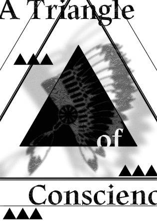
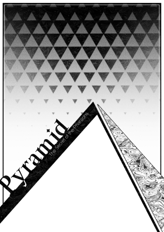
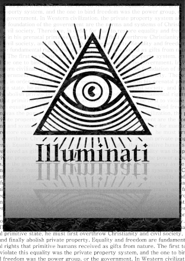
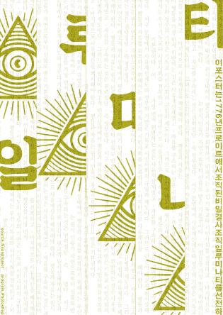
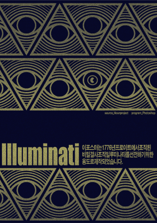
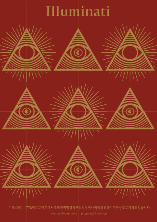
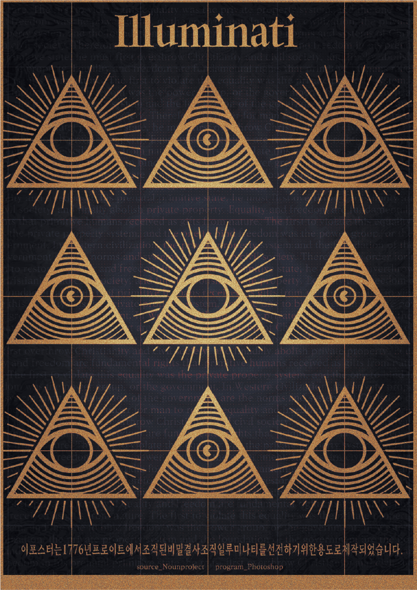

Project
Contact
qhgusehcl@gmail.com
Designer
Shape Research
이보현
삼각형 발굴
Category
Shape Poster1 / Shape Poster2 / Shape Poster3
삼각형에서 연상될 수 있는 이미지들로 실험적인 포스터들을 제작해보았습니다.
SHAPE POSTER1
SHAPE POSTER2
찌라시 오브 일루미나티
Poster
당신은 일루미나티의 존재를 믿습니까?






